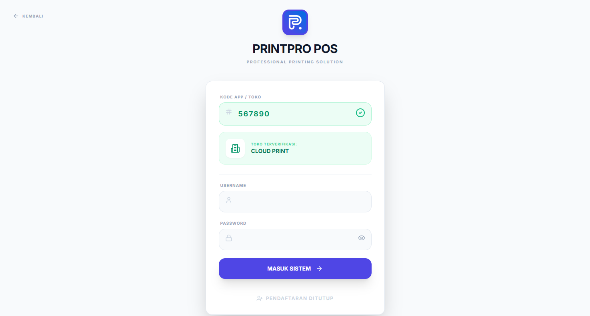

Bab 01 dari 27
Masuk dan Memahami Aplikasi
1.1 Halaman login
Saat membuka aplikasi, Anda melihat formulir login. Tersedia dua cara masuk:
- Mode API (Cloud) — memakai server tenant. Pilih bila toko memiliki lebih dari satu perangkat, beberapa kasir, atau beberapa cabang.
- Mode Lokal — data disimpan di peramban perangkat tersebut. Cocok untuk demo, pelatihan, atau satu perangkat tanpa server.
Isi nama pengguna dan kata sandi, pilih mode, lalu masuk. Jika mode API dipilih, aplikasi menghubungi server pusat untuk menemukan alamat server tenant berdasarkan kode toko/domain.

1.2 Peran pengguna
Hak akses ditentukan oleh peran dan pengaturan menu per pengguna.
| Peran | Fokus pekerjaan |
|---|---|
SUPER_ADMIN |
Semua fitur, semua cabang, pengaturan sistem |
ADMIN |
Operasional penuh dalam cabang yang ditugaskan |
STORE_MANAGER |
Operasional toko, laporan, dan staff |
KASIR |
Order, pembayaran, invoice, pelanggan |
DESAIN |
Produksi tahap desain dan file kerja |
OPERATOR |
Produksi, antrean, update status |
PRODUKSI |
Production board dan penyelesaian order |
KEUANGAN / MANAGER_KEUANGAN |
Kas, biaya, akuntansi, payroll |
GUDANG |
Stok bahan, pembelian, rak |
MARKETING / MANAGER_MARKETING |
Pelanggan, promosi, tim marketing |
MANAGER_OPERASIONAL |
Produksi, antrean, operasional harian |
MANAGER_HRD |
Payroll, kasbon, presensi, staff |
DIVISI_JERSEY, DIVISI_SABLON_BORDIR, DIVISI_LASER_AKRILIK |
Divisi produksi khusus |
STAFF |
Sesuai menu yang diberikan |
Menu yang tidak diizinkan akan tampil terkunci atau tidak muncul. Jika merasa kehilangan akses, hubungi admin.
1.3 Navigasi
- Sidebar di desktop, bottom navigation di ponsel.
- Pencarian menu untuk berpindah cepat tanpa menggulir sidebar.
- Pencarian global di header untuk mencari nomor invoice, nama pelanggan, atau produk.
- Tab terakhir yang dibuka diingat; aplikasi kembali ke tab tersebut saat dimuat ulang.
- URL mendukung deep link, misalnya
/orders,/production,/queue.
1.4 Indikator status
- Online/Offline — status koneksi internet.
- Sync — jumlah antrean data yang belum terkirim. Klik untuk melihat detail atau memicu sinkronisasi manual.
- Langganan — aplikasi memberi peringatan jika masa aktif hampir habis atau sudah habis.